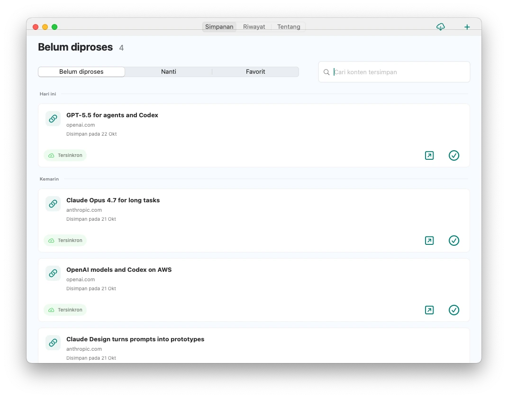
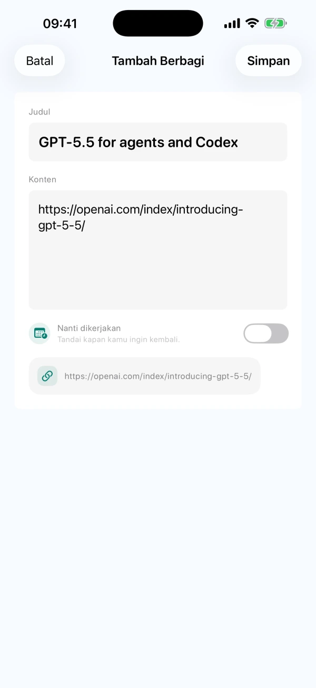
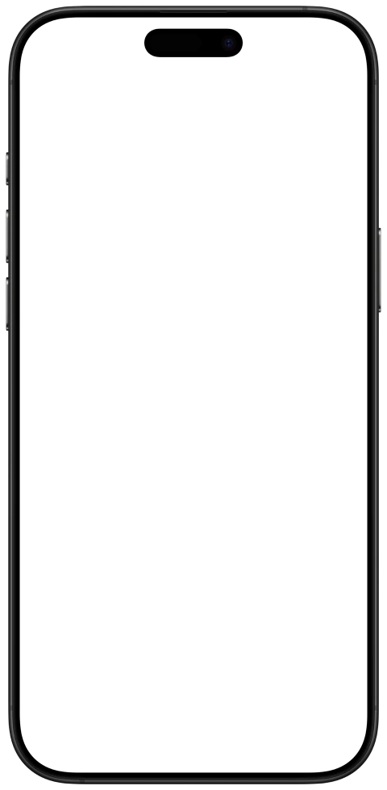
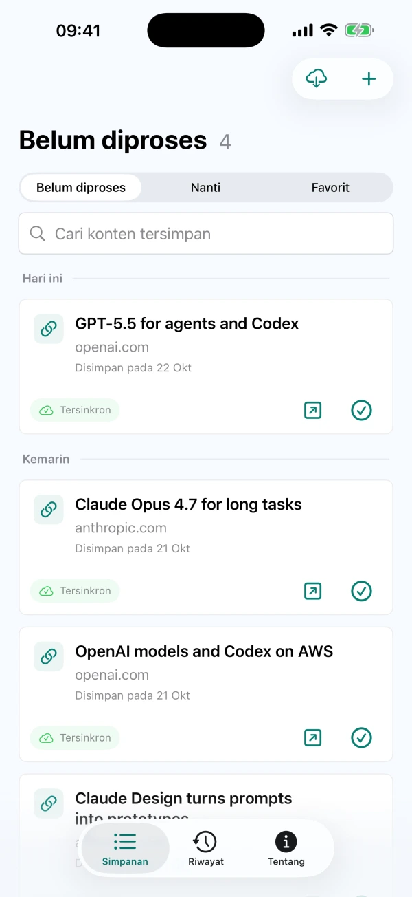

Bagikan atau catat sendiri
Simpan teks, tautan atau gambar yang didukung dari menu Bagikan di aplikasi lain. Anda juga bisa menulis ide langsung di CarryOver.
Simpan dari menu Bagikan di ponsel. Buka sumbernya di Mac saat siap menindaklanjuti.
Untuk fitur saat ini, unduh CarryOver dari App Store. DMG Mac yang diunduh langsung belum diperbarui ke rilis ini.



iPhoneiPadMac
Kirim tautan, postingan, dan ide ke CarryOver
Item yang belum selesai tetap di kotak masuk

Buka sumbernya lalu tandai sebagai selesai
Simpan teks, tautan atau gambar yang didukung dari menu Bagikan di aplikasi lain. Anda juga bisa menulis ide langsung di CarryOver.
Item yang belum selesai tetap di kotak masuk, berapa pun usianya. Tandai selesai setelah benar-benar ditindaklanjuti.
Di jendela utama Mac, cari berdasarkan judul, teks dan URL sumber, baik di kotak masuk maupun riwayat.
Item selesai masuk ke riwayat. Pulihkan ke kotak masuk saat ingin melanjutkannya lagi.
Atur tanggal dan waktu serta izinkan notifikasi sistem. Ketuk pengingat untuk membuka item tersimpan.
iCloud menyinkronkan iPhone, iPad dan Mac yang menggunakan Akun Apple yang sama. Kondisi jaringan dan iCloud dapat menunda sinkronisasi.
Versi gratis memungkinkan hingga tiga penyimpanan per hari. Pembelian Pro satu kali menghapus batas harian. Lihat App Store untuk harga di wilayah Anda. Baca bantuan